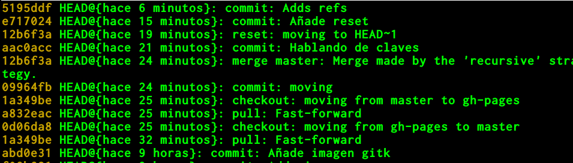

Algunas cosas
que posiblemente no sepas
sobre Git y GitHub
@oslugr
fb.com/SoftwareLibreUGR
Grupo de Telegram
Consigue un empleo
GitHub es una red social
GitHub pages: gh-pages
Publicación estática/Markdown
Oops
git reset --hard HEAD~1
git reset --hard HEAD~1
git tag -a v0.1 -m "Tageando para el postureo"
git tag -a v0.1 -m "Tageando para el postureo"

git checkout v0.2
git checkout v0.2git checkout -b desdev02
git checkout -b desdev02Creando releases
git push --tags
git push --tagsReleases == hitos == Milestones
Un hito se organiza en tareas
commit→tarea
git commit -am "Hablando de tareas refs #1"
git commit -am "Hablando de tareas refs #1"Commit ⚷ issue
Settings →
Webhooks & services→
Add Service
Código sin probar == código roto
Integración continua → Travis
branches:
except:
- master
language: c
before_install:
- wget --quiet --output-document=tidy.deb http://binaries.html-tidy.org/binaries/tidy-5.1.25/tidy-5.1.25-64bit.deb && sudo dpkg --install tidy.deb
script: tidy index.html
Los hooks hacen cosas cuando se hacen cosas.
pull, push, commit...
cd .git/hooks
mv commit-msg.sample commit-msg
chmod +x commit-msg
cd .git/hooks
mv commit-msg.sample commit-msg
chmod +x commit-msg #!/bin/sh
SOB=$(git var GIT_AUTHOR_IDENT | sed -n 's/^\(.*>\).*$/Signed-off-by: \1/p')
grep -qs "^$SOB" "$1" || echo "$SOB" >> "$1"
# This example catches duplicate Signed-off-by lines.
test "" = "$(grep '^Signed-off-by: ' "$1" |
sort | uniq -c | sed -e '/^[ ]*1[ ]/d')" || {
echo >&2 Duplicate Signed-off-by lines.
exit 1
}Alicatado frente a fontanería
git rev-list --pretty=oneline HEAD ^master
git rev-list --pretty=oneline HEAD ^master5195ddf21df96967dd2ee271cc81d3260c9b9109 Adds refs
e717024d226b41a96ac7120631547287067998bf Añade reset
12b6f3a737863f7f52b4f2836926bf3f1ef91510 Merge branch 'master' into gh-pages
09964fb8f17b11601f626dc7d54af640a0ecb08b moving
...git reflog --relative-date

git reflog --relative-date